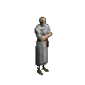

Les Personnages du jeu Diablo
Voici les trois héros que vous
pouvez incarner.
 Le warrior : C'est
le personnage qui est ( à mon avis !!.....) pour les débutants,
ou pour ceux qui ne veulent rien de compliqué, du genre : tu prends
une épée et tu tapes dans le tas !!. Le warrior à
très peu d'aptitudes à la magie , mais toute sa force est
dans son endurance et sa vitalité.
Le rogue : Cest
le seul personnage féminin du jeu , Ce personnage est de force moyenne
en endurance et vitalité. Le rogue a plus d'aptitudes a la magie
que le warrior et dispose d'une grande adresse .Le rogue n'est pas bon
pour le combat corps à corps alors il repousse ses adversaires de
loin avec son arc ( l'arme des rogues).
Le sorcier : C'est
le personnage que les adeptes de Merlin l'enchanteur vont adorer. Pas beaucoup
d'endurance ni de vitalité, mais le sorcier dispose d'une palette
de magie offensives qui réduirait en cendres le plus forts des goblins
à la couaine dur. Evitez le combat corps à corps.
Le warrior : C'est
le personnage qui est ( à mon avis !!.....) pour les débutants,
ou pour ceux qui ne veulent rien de compliqué, du genre : tu prends
une épée et tu tapes dans le tas !!. Le warrior à
très peu d'aptitudes à la magie , mais toute sa force est
dans son endurance et sa vitalité.
Le rogue : Cest
le seul personnage féminin du jeu , Ce personnage est de force moyenne
en endurance et vitalité. Le rogue a plus d'aptitudes a la magie
que le warrior et dispose d'une grande adresse .Le rogue n'est pas bon
pour le combat corps à corps alors il repousse ses adversaires de
loin avec son arc ( l'arme des rogues).
Le sorcier : C'est
le personnage que les adeptes de Merlin l'enchanteur vont adorer. Pas beaucoup
d'endurance ni de vitalité, mais le sorcier dispose d'une palette
de magie offensives qui réduirait en cendres le plus forts des goblins
à la couaine dur. Evitez le combat corps à corps.
Voici les gens du village de Tristram

Pepin the Healer : c'est
la personne qui s'occupe de vos blessures et vous offre une panoplie de
potions de vie qui vous aide dans votre quête contre le mal.
Griswold the Blacksmith
: Cet homme vous vend et répare vos armes et armures
pour vous défendre contre les monstres avide de sang qui fourmille
dans les interminables labyrinthes.
Cain the Elder : C'est
lui qui vous sert de guide dans votre quête, il pourra vous faire
part de toutes les histoires et mytes. Et si vous avez un objet en main
dont vous ne savez pas l'identité , il pourra vous aider ....contre
quelques pièces d'or .......... ( he he he ! ).
Farnham the Drunk :
Cet homme est toujours ivre !!! Le meilleur client de Ogden !! , mais il
peut toujours vous donner quelques informations.
Wirt the peg-leggeg boy
: Ce petit malin est comme on dit un petit "contrebandier" il
peut vous dénicher des articles dont Griswold ne peut vous fournir
, mais attendez-vous a payer très cher pour ses petits trésors
!!
Adria the witch : Elle
vit aux limites du village de Tristram. Les habitants du village la trouve
très étrange....... Mais elle peut vous aider en tout ce
qui conserne la magie noire et la fabriquation de potion magique.
Ogden the tavern owner :
Il est le propriétaire de la taverne du village, il peut
vous renseigner sur les rumeurs qui court dans le village.............
Gillian the Barmaid : Elle
travaille a la taverne de Ogden, elle peut , elle aussi , vous parler des
choses étranges qui se passe dans les environs.
King Leoric : le roi maudit qui n'a
pas réussi à tenir tête aux force du mal et qui est
tombé en possesion de Diablo.
The Butcher : Il décapite tout
les pauvres malheureux qui s'aventure dans les labyrinthes
 DIABLO : L'homme
........ou la chose à abattre !!!!!!
DIABLO : L'homme
........ou la chose à abattre !!!!!!